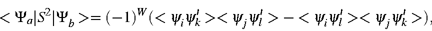
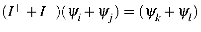

|
S2 = Sx2 + Sy2 + Sz2 |
||
| I+ = (Sx + iSy) | I+β = α | I+α = 0 |
| I- = (Sx - iSy) | I-α = β | I-β = 0 |
| Sx2+Sy2 | = | (I+I-)+i(SxSy-SySx) |
| = | (I-I+)+i(SySx-SxSy) | |
| = | ½(I+I- + I-I+) |
and finally i(SySx - Sx Sy ) = Sz.
For any microstate Ψ, the expectation value of the S2 operator is given by <S2> = <Ψ|Sz2 + Sy2 + Sx2|Ψ>
or,

Recall that p is the number of α electrons, and q, the number of β electrons. This expression simplifies to yield
For the general case, in which the state function Φ, is a linear combination of microstates, the expectation value of S is more complicated:
- 1. Ψa=Ψb:
Since the two wavefunctions are the same, this
corresponds to the expectation value of a microstate, and has already been
derived.
- 2. Except for ψi in Ψa and ψj in Ψb; Ψa=Ψb: Assuming ψi and ψj to have alpha-spin the expectation value is

The effect of the spin operator is to change the spin of the electrons but leave the space part unchanged. All integrals vanish identically due to one or more of the following identities:Therefore, <Ψa|S2|Ψb> = 0.<ψiψj> = <mimi> = Δ(i,j) <ψiψk> = Δ(i,k) <ψiψk> = Δ(j,k) - 3. Except for ψi and ψj in Ψa and ψk and ψl in Ψb; Ψa=Ψb. Two situations exist: (a) when all four M.O.s are of the same spin; and (b) when two are of each spin.
When all four M.O.s have the same spin, the effect of the spin operator is to reverse the spin of two M.O.s in the ket half of the integral. By spin orthogonality this results in an integral value of zero.
In the case where two M.O.s are of α spin and two are of β spin, the matrix elements, after elimination of those terms which are zero due to space orthogonality, are
The effect of S2 on ψk and ψl is to reverse the spin of these functions; this gives
 = (-1)^W(<\psi_i\psi_k'><\psi_j\psi_l'>- <\psi_i\psi_l'><\psi_j\psi_k'>) , \end{displaymath}">
where ψ' has the opposite spin to that of ψ.Thus, only if ψi and ψj are spatially identical with ψk and ψl will <Ψa|S2|Ψb> be non-zero. The phase-factor W is such that if i=k and j=l then W=-1, and if i=l and j=k then W=1; for all other cases the matrix element is zero, so the phase of W is irrelevant. For these two cases, the matrix element is <Ψa|S2|Ψb> = 1 if , otherwise <Ψa|S2|Ψb> = 0.
- 4. If more than two differences exist, <Ψa|S2|Ψb> = 0.
- 2. Except for ψi in Ψa and ψj in Ψb; Ψa=Ψb: Assuming ψi and ψj to have alpha-spin the expectation value is